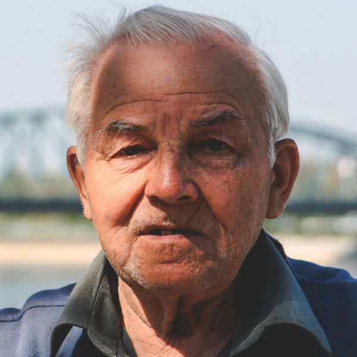
Ramón Castellví Roig
Impulsor de la fundación desde sus inicios. Vela por que conecta+ no pierda nunca su vocación comunitaria.
Buscar en conecta+
El buscador estará disponible muy pronto. Mientras tanto, prueba con estos accesos:
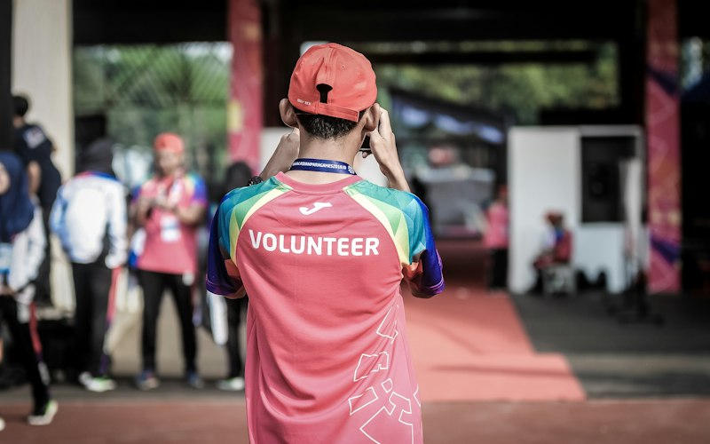
Un patronato comprometido y un equipo multidisciplinar que combina educación, tecnología y acción social en cuatro territorios.
El patronato define la estrategia de la fundación y vela por el cumplimiento de sus fines.

Impulsor de la fundación desde sus inicios. Vela por que conecta+ no pierda nunca su vocación comunitaria.
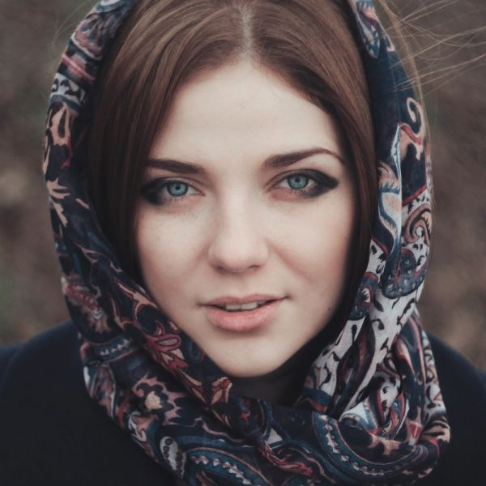
Pedagoga con largo recorrido en educación no formal y en proyectos de inclusión.

Jurista especializada en entidades sin ánimo de lucro y en buen gobierno.

Economista. Cuida de que cada euro llegue a donde más impacto tiene.
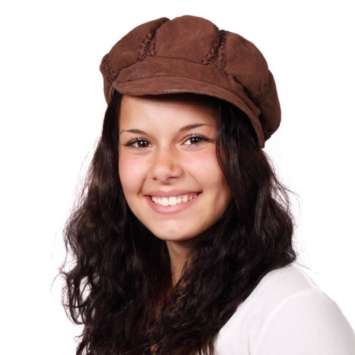
Experta en políticas de juventud y participación ciudadana.

Ingeniero de telecomunicaciones comprometido con la inclusión digital.
Educadores, formadores y técnicos que acompañan cada proyecto sobre el terreno.
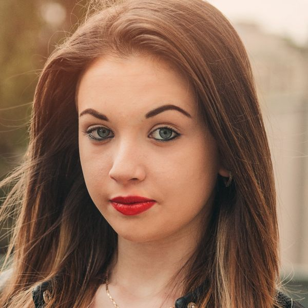
Coordina las cuatro sedes y la estrategia de la fundación.
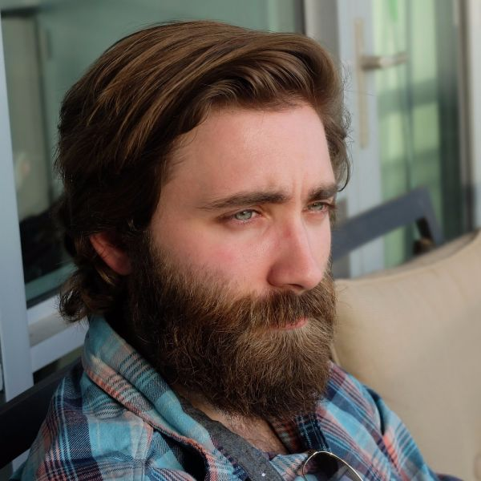
Diseña y acompaña los programas desde la idea hasta la evaluación.
Responsable de la sede de El Prat de Llobregat y de sus programas.

Conecta la sede de Madrid con entidades, centros y administraciones.
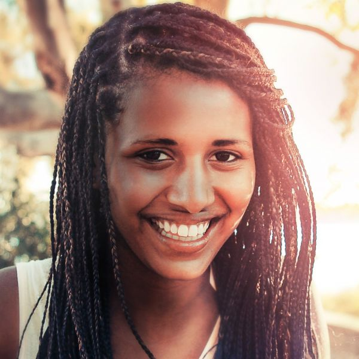
Trabaja mano a mano con las comunidades andaluzas.
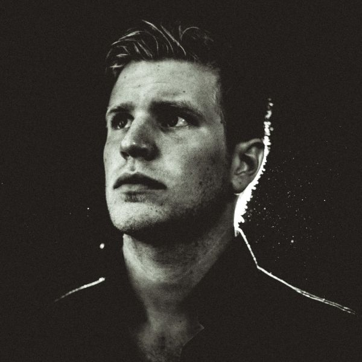
Lidera la sede gallega y los campamentos tecnológicos de verano.
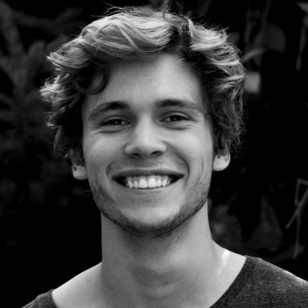
Formador en competencias digitales e itinerarios de empleo.
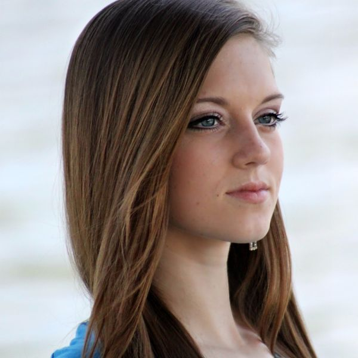
Gestiona los proyectos Erasmus+ y la relación con ALL DIGITAL.
Acoge, forma y acompaña a la red de personas voluntarias.

Cuenta lo que hacemos y da voz a las personas que participan.

Educadora social centrada en infancia y familias.
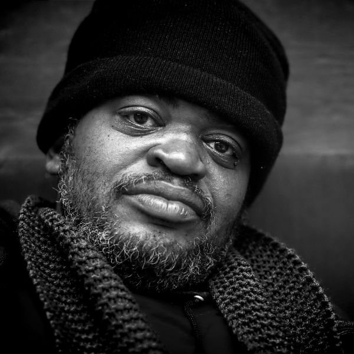
Asesora a entidades sociales en su transformación digital (SAAD).
Buscamos personas con ganas de transformar su entorno: profesionales, voluntariado y estudiantes en prácticas.